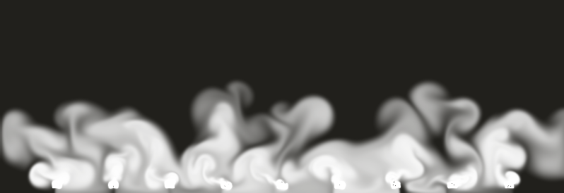
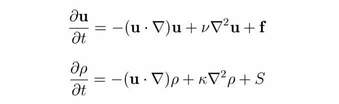

|  |
“These equations are notoriously hard to solve when strict physical accuracy is of prime importance” – Jos Stam
In this project, I implemented a 2D smoke simulation based on methods outlined Jos Stam in his paper Real-Time Fluid Dynamics for Games>. Here he outlines a method of implementing smoke effects based on the Navier-Stokes equations. The goal was not to emulate a physically accurate smoke effect as such a task can be quite difficult. Instead I explored a simple implementation of a visually appealing smoke effect that is fast enough to render in real time. Such an implementation can be applied to a variety of applications for the purposes of games to graphic design effects.
|

|
The steps of our simulation are as follows:
Each step of our simulation can be performed using their corresponding functions. What they do and how I implemented them are as follows.
Following our equation for calculating density at a time step we have the second term which tells us that our density will diffuse at a certain rate which is dependent on the fluid. We have this diffusion rate as a parameter which I allow the user to control in my simulation. We can assume that each pixel will only exchange densities with its four direct neighbors, both losing and gaining densities. Computing these exchanges and adding them to the pixel’s density seems sensible at first but is unstable. Overtime, the errors will blow out of proportion. Instead attempt to find the densities at each pixel that when diffused backwards gives us our starting densities. This ends up being a linear system for which we can solve for. Furthermore, I implemented linear solver in a separate function using the Gauss-Seidel relaxation algorithm which has the added bonus of working efficiently with sparse matrices where a lot of values are zero which is what this system is.
The first term in our density equations describes how density is affected by the velocity field. We model each pixel’s density as if it were a particle and see how it moves through velocity field. An easy and efficient method for doing so is to find the “particles” where, over a time step, end up at the center of the pixel. To do this we look at each pixel and trace the pixel’s center coordinate backwards through the velocity field. Finding the location of this traveled pixel, we can then take the weighted average of the previous densities of the neighboring pixels and set this as our new density for the current pixel we are calculating for.
We can choose to model an incompressible fluid as opposed to a compressible one. The advantage of this is that incompressible fluids will yield some nice curling effects. It also helps simplify some of the implementation. Incompressible fluids are fluids where mass is conserved at every point. This means we cannot squish down a fluid into a smaller space. To do this, we need to make sure our velocities in the velocity field are mass conserving. Calling diffuse and advect has the effect of messing with the velocities such that the velocities are no longer mass conserving. To correct for this, we follow the Hodge decomposition which states that every velocity field is the sum of a mass conserving field and a gradient field. We can compute the gradient field by finding the solution of a linear system called a Poisson equation. Again we can simply use our Gauss Seidel Relaxation function to find this solution. Once we have the gradient field, we can simply subtract it from our velocity field to get our mass conserving field.
With our main modelling functions done, we now need a way to add a source of fluid. We can think of having a dye that move around according to the velocity field and changes its density at various points according to the density field. Here we can simply have two functions called addDensity, and addVelocity to adjust our velocity and density fields directly. Each function asks for an amount to be added to the density or velocity field and the pixel of which to add to. We can then call these functions whenever we want to add a source of dye such as holding left click to add a smoke source.
We now have all our functions required to calculate and change the density and velocity fields which model a fluid. We can now use these fields to render a visual of our fluid. I implemented this in Processing, a graphical library based in Java, for ease of implementation. My rendering function goes through each pixel and sets the pixel’s alpha value to the density found at that pixel. It also slowly decreases the value of the density at that pixel to allow the smoke to fade away in the render.
The biggest challenge was trying to find ways to speed up the simulation. Initially the project was coded in Python. It became clear early on that python was far to slow for this kind of simulation, taking roughly half a minute to calculate the new density and velocity fields. Thus I instead used Processing which, being based on Java, was fast enough to render the simulation in real time at lower resolutions. However, Processing is still not the best language as the simulation can only run in real time at low resolutions. I had looked into working with ThreeJS and porting over the code to JavaScript in order to make use of WebGL shaders to speed up rendering. However due to time constraints I opted to instead keep my current implementation as this project was more of an exploration rather than a practical simulation.
Along with a basic understanding of the math behind modeling fluids, I also learned of some techniques and adjustments that can be used to simplify implementation at the cost of accuracy. Furthermore, I’ve learned the importance of proper planning to circumvent the difficulties of efficiency. Stam’s paper had shown an implementation in C which would yield more efficient results. On top of this, the use of shaders would’ve yielded a huge benefit in rendering speeds. Should I tackle a similar project, I would look into utilizing shaders and perhaps a language better suited to graphics processing.
Special thanks to the following resources, without which this project would not be possible: